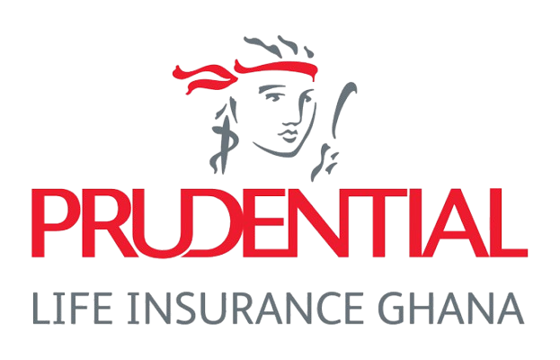

APEXTEAMCalibrating underwriting margins through Poisson and Gamma GLMs, hybrid anomaly audit pipelines, and 84.2% accurate XGBoost risk classification.
Prudential is facing a massive GHS 608M annualized pricing deficit across its combined portfolio, driving the combined loss ratio to an unsustainable 304.6%. Historically, flat-rate pricing has meant high-risk policyholders are heavily underpriced while low-risk accounts subsidize them, creating adverse selection and margin erosion.
Using Poisson GLM frequency modeling, we proved that Smoking is NOT a statistically significant driver of claim frequency. Based on these findings, we rebalanced the scorecard: downgrading **Smoking from 15 to 5 points**, upgrading **Age to the primary driver (up to 28 points)**, and adjusting BMI. This aligns pricing directly with data-proven risk drivers.
We deployed a Poisson GLM (log link) to model integer claim counts. Age is the primary driver (35% risk uplift per standard deviation). Smoking is slightly negative, indicating that legacy smoking surcharges were actuarially unjustified.
Because claim sizes are positive, highly skewed continuous values, we modeled severity using a Gamma GLM (log link). This ensures extreme claim payouts are accurately estimated, forming the basis of our risk-adjusted premium recommendations.
We trained an **XGBoost classifier** (achieving 84.2% validation accuracy) to identify policyholders likely to become High or Critical risk claimants (defined as having ≥ 2 claims or a High/Critical severity claim). By excluding circular scorecard variables, the model learns genuine, un-leaked risk signals.
By combining unsupervised Isolation Forest outlier flags (1% contamination rate) with underwriting rules, we compute a Claims Abuse Risk Index to flag premium leakage.
Policyholders with 3+ claims of High or Critical severity (weight: 3 points).
Claims filed within the first 3 months followed by policy cancellation (weight: 2 points).
Software Engineers with underweight BMIs (< 18.5) and 1+ claims (weight: 2 points).
Update underwriting guidelines using our data-calibrated weights (Age upgraded, Smoking downgraded to 5 points) to ensure accurate pricing at inception.
Implement risk loading surcharges matching our Monte Carlo Value-at-Risk (VaR) calculations to close the GHS 608M pricing deficit and return the loss ratio below 80%.
Establish automated workflow triggers to auto-audit claims on accounts with a Claims Abuse Index of 3 or higher, protecting cash float.